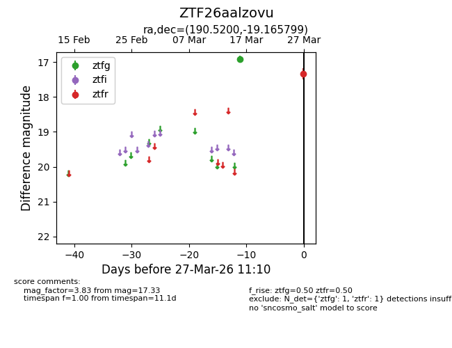
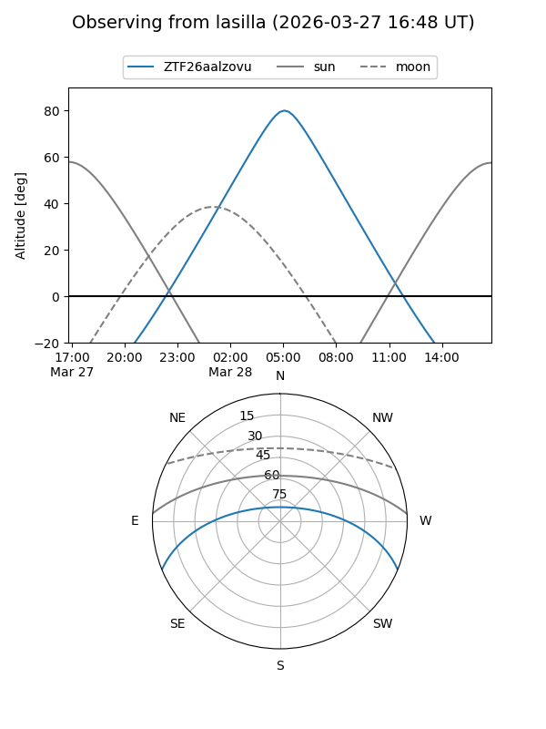
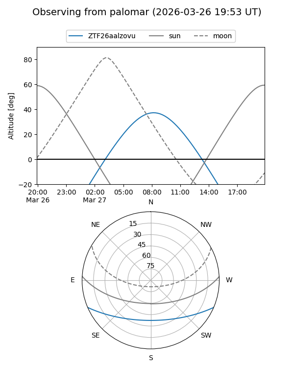

ZTF26aalzovu
Target ZTF26aalzovu at 2026-03-27 11:13
Aliases and brokers:
FINK: link
Lasair: link
ALeRCE: link
alt names
ZTF26aalzovu (ztf,fink_ztf)
Coordinates:
equatorial (ra, dec) = 190.5200,-19.16580
equatorial (HMS+DMS) = 12:42:04.80,-19:09:56.88
galactic (l, b) = (299.8773,+43.65044)
Flags:
Photometry:
last ztfg=16.92, ztfr=17.33
1 ztfg, 1 ztfr detections
Lightcurve

Visibility


Additional plots